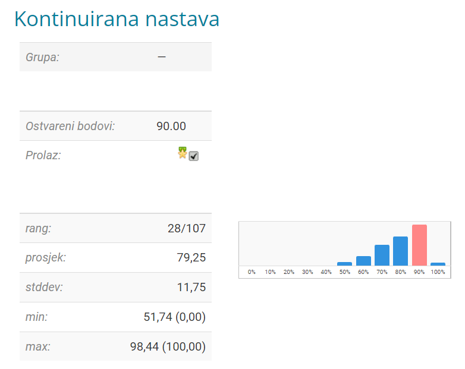

Pleteni miš Uvod u svemirske tehnologije je prije bio uvod u aerosvemirske tehnologije (moguce da je malo modificiran). Dosta lagan predmet - bilo je 4 zadace svaka po 20 - dakle ukupno 80b iz zadaca za koje imas msm oko tjedan dana (mozda i vise) za riješiti.
Još 20b donosi poster koji se radi u timu (Doslovno A3 poster sa slikom i nekoliko paragrafa teksta, prosle godine se radio digitalno) i tu vecina dobije 20/20
Zadace su na principu da napravis mali program koji ce racunati nesto i slikaš izlaz programa ili to izracunas na papiru.
Mislim da za gotovo sve zadace postoji kod na studosima od prosle godine (ako se ponove)
Mislim da raspodijela bodova govori za sebe
